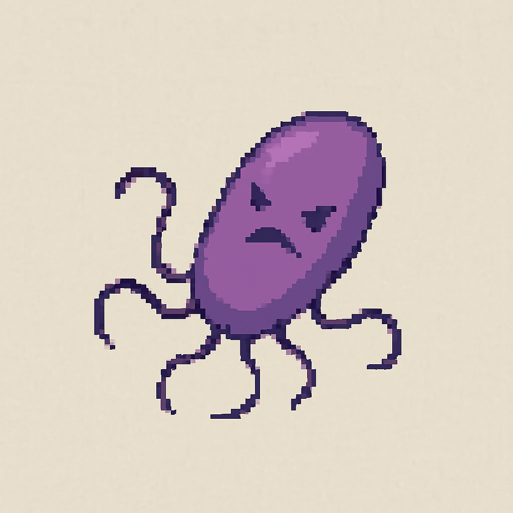

|
Escherichia coli |
Bactérie intestinale fréquente, certaines souches pathogènes. |
Commun |
|
Clostridium perfringens |
Cause fréquente d’intoxications alimentaires. |
Commun |
|
Salmonella enterica |
Très fréquente, responsable d'intoxications via œufs, viandes ou lait crus. |
Commun |
|  |
Salmonella typhi |
Évolution redoutable de S. enterica, responsable de la fièvre typhoïde. S'attrape via de l'eau contaminée. |
Rare |
 |
Bacillus cereus |
Thermorésistante, cause des intoxications alimentaires, notamment via du riz mal conservé. |
Commun |
|
Bacteroides fragilis |
Habituée du microbiote, peut causer des abcès en cas de migration. |
Commun |
|
Enterococcus faecalis |
Microbe intestinal opportuniste, parfois infectieux en hôpital. |
Commun |
|
Klebsiella pneumoniae |
Commensale mais redoutable si elle se propage hors de l’intestin. |
Commun |
|
Proteus mirabilis |
Connue pour ses infections urinaires et son odeur ammoniacale. |
Commun |
|
Citrobacter freundii |
Rarement pathogène, sauf chez les personnes fragiles. |
Commun |
|
Shigella sonnei |
Provoque des diarrhées sévères, très contagieuse. |
Rare |
|
Campylobacter jejuni |
Souvent liée à la volaille mal cuite, provoque une diarrhée intense. |
Rare |
|
Helicobacter pylori |
Colonise l'estomac. Impliquée dans les ulcères et certains cancers gastriques. |
Rare |
|
Yersinia enterocolitica |
Peut imiter une appendicite. Transmise via le porc. |
Rare |
 |
Enterococcus faecium |
Proche de E. faecalis, mais encore plus résistant et hospitalier. |
Rare |
|
Staphylococcus aureus |
Produit des toxines digestives puissantes. Provoque des diarrhées éclair. |
Rare |
|
Morganella morganii |
Opportuniste rare, surtout en milieu hospitalier. |
Rare |
|
Plesiomonas shigelloides |
Transmise par les fruits de mer ou l’eau douce contaminée. |
Rare |
|
Clostridioides difficile |
Cause de colites sévères après antibiotiques. Très tenace. |
Très rare |
|
E. coli O157:H7 |
Souche virulente d’E. coli. Peut entraîner une insuffisance rénale. |
Très rare |
|
Pseudomonas aeruginosa |
Opportuniste hospitalier, souvent multirésistant. Peut coloniser l'intestin chez les plus fragiles. |
Très rare |
|
Vibrio parahaemolyticus |
Contamine les fruits de mer. Gastro parfois violente. |
Très rare |
|
Edwardsiella tarda |
Rare, d’origine aquatique. Peut être très grave. |
Très rare |
|
Vibrio cholerae |
Agent du choléra. Diarrhée massive, déshydratation foudroyante. |
Exotique |
|
Listeria monocytogenes |
Contamine les produits froids. Très dangereuse chez la femme enceinte. |
Exotique |
|
Entamoeba histolytica |
Amibe tropicale. Diarrhées sanglantes sévères. |
Exotique |
|
Balantidium coli |
Parasite rare d’origine porcine. Très peu courant. |
Exotique |
|
Clostridium botulinum |
Producteur de la toxine la plus puissante connue. Botulisme. |
Légendaire |